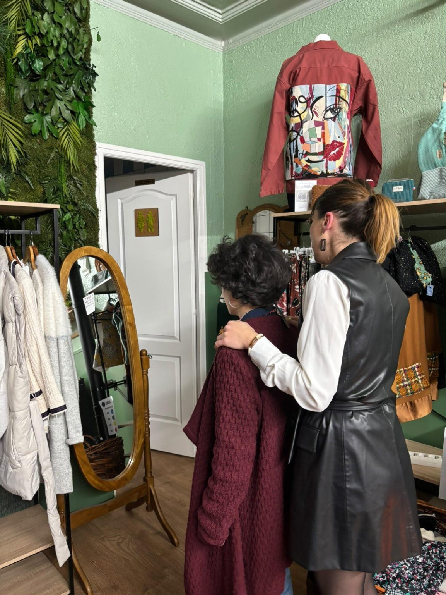
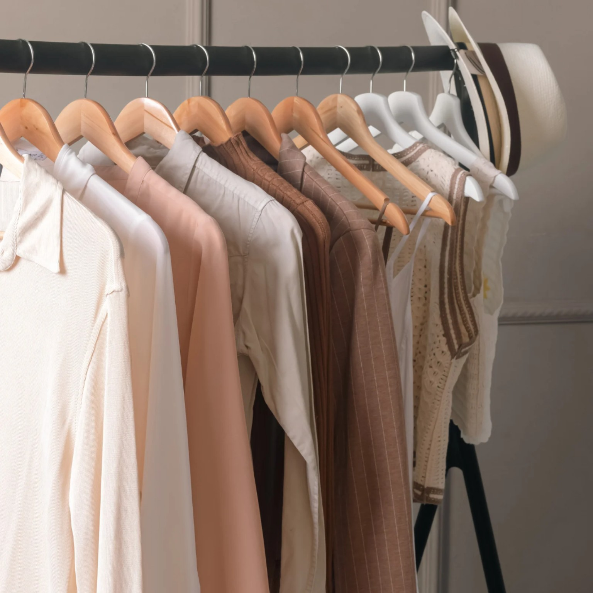
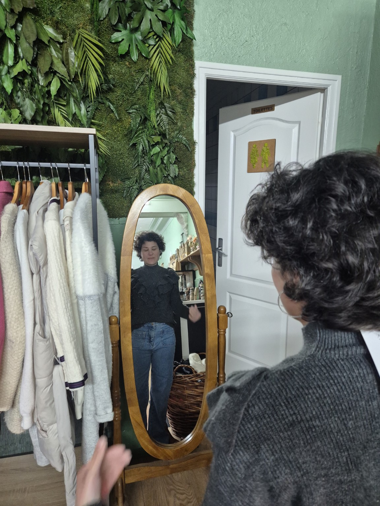
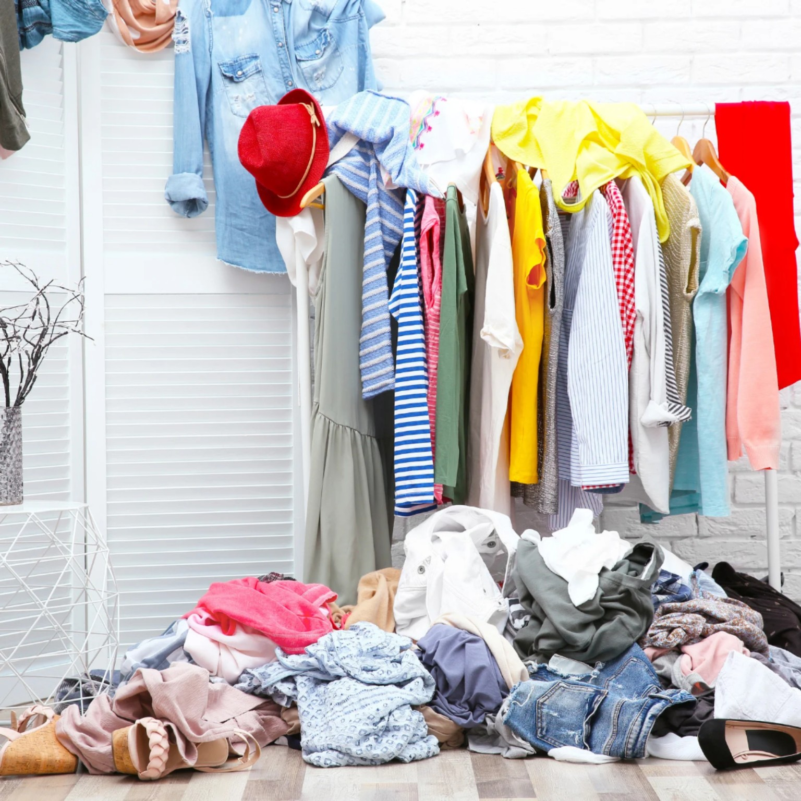

Tri de garde-robe
Et si ton dressing racontait encore une histoire que tu as déjà quittée ?

Il y a des vêtements que l'on garde sans vraiment savoir pourquoi.
Cette robe qui nous rappelle un moment heureux.
Ce jean que l'on remettra "quand on aura perdu quelques kilos".
Ce chemisier acheté pour un travail que l'on a quitté.
Ces vêtements de grossesse.
Ou ceux d'une période de notre vie où tout semblait différent.
Au fil du temps, notre dressing se remplit.
Mais parfois…
Il se remplit surtout de souvenirs.
Et sans même nous en rendre compte, nous continuons à faire une place à des versions de nous-mêmes qui n'ont plus besoin d'y vivre.
Faire du tri, ce n'est pas seulement ranger.
C'est aussi apprendre à se détacher de ce qui ne nous ressemble plus.
Nous avons toutes déjà gardé un vêtement "au cas où".
Au cas où nous retrouverions notre silhouette d'avant.
Au cas où cette période reviendrait.
Au cas où…
Et si ce "au cas où" nous empêchait simplement de faire de la place à la femme que nous sommes aujourd'hui ?
Je ne crois pas qu'il faille jeter son passé.
Je crois simplement qu'il mérite parfois d'être remercié…

Retrouver de la légèreté
Un dressing encombré peut parfois refléter un esprit encombré. Chaque matin, choisir une tenue devient plus compliqué.
On hésite. On essaye. On repose. Et l'on finit souvent par remettre la même chose. Pas parce que l'on manque de vêtements. Mais parce qu'on ne se reconnaît plus vraiment dans ce qui nous entoure.
Retrouver la femme derrière les rôles
Au fil de la vie, nous traversons de nombreuses étapes. Nous devenons étudiantes. Professionnelles. Compagnes. Mamans parfois. Et il arrive qu'à force de prendre soin des autres, nous oubliions doucement de prendre soin de nous.
Être maman ne signifie pas cesser d'être une femme. Prendre soin de toi n'enlève rien à tout ce que tu donnes aux autres. Au contraire. C'est aussi une façon de te retrouver.


Mon accompagnement
Je ne viens pas faire du rangement à ta place. Je viens t'accompagner. Nous prendrons le temps d'ouvrir ton dressing. De regarder chaque pièce avec bienveillance. Sans jugement. Sans culpabilité.
Je ne te dirai jamais ce que tu dois garder ou jeter. Je t'aiderai à te poser les bonnes questions. Est-ce que ce vêtement te ressemble encore ? Est-ce qu'il te fait du bien lorsque tu le portes ? Est-ce qu'il raconte encore ton histoire… ou celle d'une femme que tu n'es plus ?
Petit à petit, ton dressing retrouvera du sens. Et toi aussi.
Ce avec quoi tu repartiras
Un dressing plus clair.
Des tenues plus faciles à composer.
Moins de charge mentale.
Mais surtout…
La sensation d'avoir fait de la place.
Pas seulement dans ton armoire.
En toi aussi.
Parce que parfois…
Pour accueillir ce qui nous attend, il faut d'abord accepter de laisser partir ce qui ne nous accompagne plus.
Une dernière chose…
Je ne crois pas qu'un tri de garde-robe consiste à se séparer de vêtements.
Je crois qu'il consiste parfois à remercier une partie de son histoire…
Pour laisser un peu plus de place à la femme que l'on est en train de devenir.
Envie d'en discuter ?
Un premier échange suffit pour poser les bases, en douceur et sans engagement.